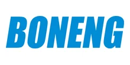

Поставляем оригинальные редукторы Boneng под заказ — оригинал с гарантией производителя. Нужно дешевле — изготовим аналог собственного производства по присоединительным размерам. Цена и срок поставки — по запросу.
Оригинальные промышленные редукторы Boneng — под заказ, с гарантией производителя. Пришлите модель или шильд — сообщим цену и срок поставки. Нужно дешевле — изготовим аналог (см. ниже).
| Серия | Назначение |
|---|---|
| Цилиндрические | горизонтальные промышленные редукторы |
| Коническо-цилиндрические | под углом 90° |
| Планетарные | высокомоментные |
| Червячные | компактные |
Точные серии и типоразмеры — по каталогу производителя. Цена и наличие оригинала — по запросу. Не оферта.
Изготавливаем аналоги редукторов и мотор-редукторов Boneng под замену вышедшего из строя привода — по присоединительным размерам, валам и передаточному числу. Точную модель аналога подбираем по вашему шильду или чертежу.

| Что заменяем | Редукторы и мотор-редукторы Boneng |
|---|---|
| Наш аналог | Производство Челябинск — Ч, МЧ, Ц2У, КЦ, 4МЦ2С и др. |
| Гарантия | 24 месяца |
| Подбор | По модели или шильду — за 15 минут |
Совпадают присоединительные размеры, валы и фланцы — узел встаёт на штатное место.
Вдвое выше среднерыночной.
Отгрузка со склада от 3 дней — не ждать импорт месяцами.
Пришлите фото шильда или модель — подберём аналог за 15 минут.
Оставьте контакты или пришлите модель/шильд — инженер подберёт аналог, рассчитает присоединительные размеры и пришлёт КП.
Получить КПГабаритный аналог изготавливаем от 3 дней со склада или под заказ. Оригинал Boneng поставляем под заказ — срок зависит от модели и наличия, точные сроки сообщим при запросе.
Да, мотор-редукторы рассчитаны на работу с частотным преобразователем. Сообщите требуемый диапазон регулирования оборотов — подберём двигатель и комплектацию.
Передаём паспорт изделия, сертификаты и закрывающие документы — счёт-фактуру или УПД. Работаем по договору; для постоянных и серийных клиентов согласуем индивидуальные условия.
Да. Для производителей оборудования делаем серийные поставки с резервом на складе и фиксированной ценой по договору — приводная часть вашей серии всегда в наличии.
Хотите Boneng купить с гарантией — поставляем оригинальный Boneng редуктор под заказ, а если нужно дешевле и быстрее, изготовим аналог Boneng собственного производства по присоединительным размерам, валам и передаточному числу.
Промышленные редукторы Boneng применяются в приводах конвейеров, насосов, мешалок, дробилок и другого технологического оборудования. В линейке производителя представлены основные типы редукторов — цилиндрические, конические, планетарные и червячные, которые различаются компоновкой, передаточным отношением и допустимой нагрузкой. Точные серии и типоразмеры уточняются по каталогу производителя и по данным вашего шильда, поэтому конкретную модель мы не угадываем, а определяем по присоединительным размерам.
Оригинальные редукторы Boneng поставляем под заказ с гарантией производителя. Этот вариант подходит, когда требуется именно заводское изделие. Подробнее о замене импортных приводов — на странице импортозамещения редукторов.
Если оригинал слишком долго везти или нужно сэкономить, изготовим аналог Boneng собственного производства по присоединительным размерам — узел встаёт на штатное место без переделки рамы. Чтобы подобрать аналог по модели или шильду, воспользуйтесь формой подбора редуктора.
| Типы | Цилиндрические, конические, планетарные, червячные |
|---|---|
| Поставка | Оригинал под заказ + аналог собственного производства |
| Цена | По запросу |
| Подбор | По модели и шильду |